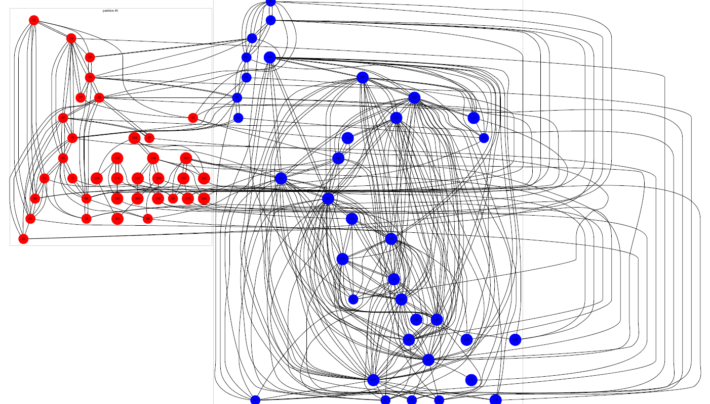

The game of the connection economy


This Anime search engine for Mbenda can be more exploited as a marketing tool for anime creators and producers if it also has a feature that could allow you to input the sentence you want for your favorite character to say it and lipsynch systems are already able to do this. Then a game or anime character that the anime or game fan cannot easily animate for making it play the role the fan wants is a character like us designed to end in the graveyard.
The opportunity with Bits is that it allows us to create flexible and dynamic objects what anime and game characters like blog articles and youtube video are already. That’s why personalization is always the goal of digital creators and entrepreneurs but personalization is different from standardization which is the goal of an entrepreneur running a business based on sustaining innovation.
But Disruptive digital startups once they found the traction that makes them get a big userbase quickly go public for more funds and adopt this mindset of big corporations trying to grow organically or with acquisitions forgetting to build this independent child startup that is tasked to always forecast and find new creative ideas and disruptive business models with a team that keeps the startup culture that made this new big tech company get a big userbase and go public. Instead, The effort of coming up with new ideas is left to other fundless entrepreneurs like me while supervising what’s being up and trendy for acquisition or for internal cloning of the solution behind. Every social media and communication application will try to buy ClubHouse or to ClubHouse internally.
WhatsApp-like applications could leverage the idea behind this Anime search engine for Mbenda because why not go further with emoji? Why if I send this vocal using WhatsApp, telegram, or other communication applications there isn’t this animated and maybe comic emoji character that acts as I and says my vocal or my text written message. Yes, a written message sent with a messaging application should able to be read by this default voice that you have chosen or your own voice if this machine learning system that fuels this solution has enough of your recorded speech. The emoji could be simply your image that could be easily animated. There is already this piece of technology that can scan you and produce a 3D version of you. Then why spend so much time creating a game character and why not game yourself? because gamers are not so represented in games, that’s what I believed and women had the worse place what this article published today wired titled Returnal and Why Games Need More Badass Middle-Aged Women points out.
Great ideas and talents are all around out there but the winners are those who connect and link people with ideas that help them achieve their goals more easily. To be this winner you should be armed with empathy.
PS: This the 501st short-form article I have written in a year and maybe it is time to stop counting the numbers of your followers and start building this kind of connection engine that I am building right now because we are just at the starting point of the connection economy and nothing is still too late into this connection economy based on the speed of light.
What is the connection economy? The connection economy rewards value created by building relationships and fostering connections, rather than assets and “stuff,” like the industrial economy. https://www.payette.com